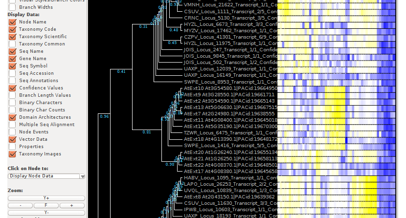

Troubleshooting Phylogeny
Applet View
The phylogeny page is written to the latest web technology. Some old browsers may not work with it. But, since many new browsers are free - why not use one? ;-) Hopefully the problems are not insurmountable and take just a few moments to sort out.
First thing: getting the right software
You must use a modern web browser. I use firefox v39.0, but probably chrome, safari, opera or recent Internet Explorer is ok too. If you dont have a suitable browser, you'll need to download and install one.
To view the tree you must have java 1.7 (aka. java7) or later installed on your computer. If you dont have it installed, please visit Java.com and download and install it from there. If you have old java versions already installed on your computer, you may wish to delete them.
Next: adding a site exception
If you just run any software, you can destroy your computer. Java is no exception - it carefully restricts what websites that want to use java on your computer can do. But to display the tree, we need to add the website as an exception to the rule. If you dont want to do this, thats fine, but applet view wont work without it.
To change the site exception list, you'll need to locate the Java Control Panel. For windows, this can be found at Control Panel -> Java. Then:
- click on the Security tab
- click on 'edit site list'
- check the box 'enable java content in the browser'
- add an entry for 'http://services.plantcell.unimelb.edu.au/hrgp' and accept when prompted that its not secure
- click OK
The end result should look like this:

Third: accept security prompts
When running the tree software for the first time, your browser will ask you to confirm that you want to run this software: be sure to click the 'Run' button.
Fixed?
To see the heatmap, be sure 'vector data' is checked on the left hand side. It also helps to uncheck 'phylogram' so that the pairwise alignment heatmap for each taxa lines up. Clicking on the terminal node for each taxa yields information including the protein sequence.
Hopefully, thats it. But there can be other problems - from firewalls to security software that prevent successful tree viewing in your browser. Thats ok, just use the download button instead and install Archaeopteryx to your computer instead.
Download
Clicking the download button beneath a tree, will download the PhyloXML version to your computer. This tree data file is produced from the Newick tree format after alignment of the gene tree. The PhyloXML format supports decoration of each taxa with additional information and it is recommended that you view the tree in Archaeopteryx where you can convert it to other file formats if you wish. For now, the additional information includes pairwise %similarity (including identity) of each taxa to all others in the tree and protein sequence. Other information may be added to the tree in future. To see the pairwise alignment data be sure to click "vector data" on the left hand side of the applet view.
The left side navigation bar lets you download a ZIP file of all the phyloxml trees as a single download for your convenience. It is a large download, that may take some time.